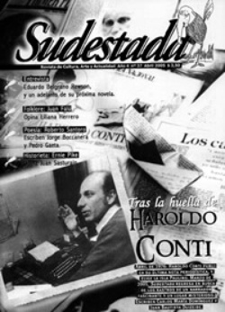

Buscar
Haroldo Conti: Un fantasma recorre la isla Paulino
Poco antes de su secuestro, Haroldo Conti publicó en la revista Crisis su última crónica periodística. El lugar elegido para esa virtual despedida fue la ignota Isla Paulino, refugio cercano a las costas de Berisso. La belleza implacable de aquel relato exigía volver al lugar de los hechos para buscar las huellas de un narrador fascinante y de un lugar misterioso. A partir de la invitación del escritor platense Juan Bautista Duizeide, el equipo expedicionario de Sudestada aceptó el desafío, y una mañana de febrero remó rumbo a la Paulino. El resultado de aquella aventura se asoma en estas páginas, donde mezclamos las voces del entrañable Haroldo en su última crónica, con la nuestra propia. Además, Duizeide escribe sobre Conti periodista, Carlos María Domínguez nos manda desde Uruguay un conmovedor artículo sobre sus encuentros con Haroldo, y Santiago Palavecino explica cómo llevó a la pantalla grande un relato del escritor de Chacabuco.
Edición N° 37
Abril 2005
Revista bimensual
Comprar edición impresaSumario
- Haroldo Conti: Un fantasma recorre la isla Paulino
- Patético y desmemoriado, Norberto Galasso, en "marxista" nacional
- 50 años sin el perseguidor
- Eduardo Berlgrano Rawson: "La resistencia de Cuba va a llenar las crónicas del futuro"
- Juan Falú: De la raíz a la copa
- Omar "Manotazo Fernández" Alegre: "La vagancia me respeta"
- La última batalla de Ernie Pike
Compartir Articulo
"Los lugares son como las personas. Comparecen un buen día en la vida de uno y a partir de ahí fantasmean, es decir, se mezclan a la historia de uno que se convierte en la quejumbrosa historia de lugares y personas. Esto es, los lugares y las personas se incorporan en los adentros y se establecen como sujetos persistentes.
Ahora paso a contar y de hecho voy a descubrir uno de esos fantasmas. Refiero la fantasmagórica Isla Paulino, que algunos, los más alejados, mal dicen Paulina, la cual isla un día se me apareció persona y tres después se desapareció tan de facto repente como cualquier aparición y aunque todavía me pregunto si verdaderamente estuve allí pues todo lo que me queda es un montón de papeles, unos diarios viejos y una cinta magnética y un cierto regusto metálico a vino de uva americana yo sé que consiste perenne allá frente a Berisso y que el que me desaparecí soy yo, pero para el caso es lo mismo".
Uno se pasa la vida buscando fantasmas, indagando en sus frágiles huellas. Pero cuando, por una de esas casualidades, se topa con alguno, disfraza tamaño encuentro con excusas vulgares y racionales. Nos negamos a creer en fantasmas, aunque probada está su existencia. Los fantasmas vienen a ser ausencias rebeldes, de esas que se resisten con uñas y dientes a perderse en el olvido, de esas que luchan por seguir siendo presente y que eligen para sus esporádicas apariciones lugares mágicos, zonas alejadas de la mirada urbana donde se pegan una vuelta de vez en cuando para dejar una huella, otra más.
Una de esas tibias huellas orientó nuestro viaje hacia la isla Paulino. La huella de un escritor que retrató esa zona con una belleza extraordinaria, en una crónica publicada en las orillas de una dictadura que arrasó con todo, incluso con la vida del cronista nacido en Chacabuco. Había que volver a la Paulino, había que seguir el rastro de Haroldo Conti en aquellos parajes poco conocidos que tanto lo cautivaron casi treinta años atrás. Seguíamos un rastro débil, difuso. Seguíamos la sombra de un fantasma.
Pero un día conversamos con un escritor platense, de nombre Juan Bautista Duizeide, y compartimos experiencias y anhelos. Y la charla nos llevó a esa isla que él tan bien conocía. La invitación quedó flotando en la despedida y en poco tiempo la atrapamos en el aire, gustosos de contar con un guía para aquella búsqueda.
¿Qué conocíamos de la Paulino, además de aquella vieja crónica de Haroldo, antes de la invitación de nuestro amigo? Poco, nada. Apenas algunas noticias sueltas publicadas en los matutinos platenses: la extraña aparición de un pingüino emperador en sus playas, bautizado "Pichuco", que sobrevivió a un viaje extenuante desde gélidas regiones y casi perece en las fauces de un par de perros isleros nada hospitalarios; su famoso vino de la costa, que el mismísimo Indio Solari menciona en un tema de su último disco; acaso escuchamos algo de uno de los asesinos de Miguel Bru, prófugo de la justicia y buscado por la policía en la isla hace unos años. Pero no mucho más. De modo que sin archivo abundante, nos subimos a los kayak y partimos rumbo a la misteriosa isla, detrás de nuestro guía y con bastantes dificultades para aprender un oficio en una mañana calurosa. Para decirlo con honestidad: los tres kilómetros que separan al Club Náutico de Berisso de la isla, recorridos en veinte minutos por la lancha colectiva, nos tomaron poco más de una hora de remada, entre amateurismos varios por los que no vale la pena emborronar cuartillas, como se dice por ahí.
En la travesía por un sereno río Santiago, nos topamos con una geografía que hablaba del tiempo: un viejo carguero invadido por el musgo, podrido por el óxido y el fuego, con un gastado logo apenas visible de cerca que dice mucho también de otra época, otro país: YPF. Un poco más adelante, mirando hacia Ensenada, la silueta de los astilleros más grandes de Latinoamérica, los que le roban al río su nombre desde 1953, los que cobijan las luchas de varias generaciones de trabajadores hasta este presente de incertidumbre. Dejamos atrás lo que el río nos propone; los bordes desprolijos de la Paulino nos animan: vamos llegando, falta poco. Uno a uno se suceden los embarcaderos de madera, que en medio de un monte que invade la costa, nos advierten la presencia de algunas casitas ocultas por ahí, en el verde interminable de la isla que contrasta con el marrón del río por el que nos deslizamos sin sutilezas, a decir verdad.
Pero, contra nuestros propios agoreros pronósticos, llegamos.
"No hemos hecho otra cosa, desde que salimos, que costear la isla, pero recién ahora se abulta y verdea como una verdadera isla, a la derecha, muy bonita, medio isla, medio barco encallado con su verde arboladura a este viento del verano que sopla caliente desde el oeste, pampero para nosotros, viento de bajante, 'maestral', y más probablemente mistral, para los pescadores de la zona, que lo nombran de oído. Ahora entramos al canal Santiago propiamente dicho, que se empezó a pala y lo siguió después una draga holandesa, de baldes, esas desmesuras de entonces, y que dividió en dos la isla Santiago haciendo de una dos, la Santiago o Monte Santiago o Fanessi, a la izquierda, que es donde está la Escuela Naval Militar y a la derecha la Paulino. El nombre proviene, digamos de una vez lo que oímos mil, de don Paulino Pagani. Y ahora ya navegamos sobre memorias, sobre la parte sumergida de la isla Paulino, la verdadera isla posiblemente, la que vivió y brilló hasta el 40, cuando la hundió la puta creciente del 15 de abril, esa negra fecha que está en la memoria de todos y que es el acontecimiento más notable de la isla".
La Paulino es puro pasado: tuvo su tiempo de esplendor, cuando los viñedos de esa uva chinche de gusto dulzón (eso dicen, al menos, porque nos quedamos con las ganas de probarla) armonizaban los colores de la isla, y varios centenares de familias italianas se radicaban para trabajar la tierra o aprovechar el negocio de la extracción del granito para los adoquines, que tan buena imagen le dejaron a algunas calles de La Plata. Hoy esos rieles siguen ahí, recorren la isla y sus brazos oxidados se pierden en la espesura del monte, y hablan también de otros tiempos. Tiempos de boliches que albergaban cansancios y necesidades de laburantes, que dejaban por un rato la rutina de la fábrica y remaban en busca de una copa y unos besos brujos.
Cuando Haroldo pone un pie en la Paulino, ya todo es pasado, y dice que para ese entonces la isla no contaba con más de sesenta familias. Hoy, la cifra es lapidaria: quince familias, de las cuales apenas cinco permanecen en la isla durante el invierno.
Cruzamos la isla para llegar a la playa. De lejos, una hilera de barcos esperan la señal para llegar al puerto. Más cerca, en la punta, divisamos otra huella: es el "Semáforo", una torre de 40 metros de alto que desde 1905 posicionaba a los barcos, hasta que hace unos años quedó inútil, abandonada, como una invitación muda a ignorar los carteles manuscritos que advierten "prohibido subir" para obtener una panorámica única de la isla que la prefectura se ocupa muy bien de frustrar. Una pena. En ese semáforo conoció Haroldo a "Los muchachos de Quilmes", los semaforistas Pedro Lamanuzzi y Héctor Longobardi "que nos reciben en la casilla como a un par de náufragos, nos invitan a matear, nos ofrecen una cucheta para hacer noche y nos convidan a pasar allí el año nuevo que se avecina. El viaje valió la pena cuanto más no sea para saludar y conocer a esos dos tipos de oro", relata Conti. Pedro y Héctor ya no están, y es una lástima.
Dejamos el semáforo y emprendemos el regreso a la zona del embarcadero, donde nos espera el almuerzo, un plato de tallarines con estofado servido en la hostería de Marcelo, pero eso sería adelantarse en el relato.
¿Será posible escribir una crónica sobre la Paulino sin mencionar a los mosquitos? Difícil no parecía, al menos hasta que la expedición perdió el rastro de Haroldo y se metió en un camino interno donde nos esperaba, agazapada, una jauría de hambrientos mosquitos que sólo nos abandonó un centenar de metros más adelante, con la panza llena por el banquete que se habían ligado como regalo del cielo.
Con un poco de retraso, llegamos a la hostería para reponernos del insecticidio sufrido con una comida que nada tiene que envidiarle a los manjares que servía el propio Paulino Pagani. Tal como contaba Haroldo, nosotros también abrimos los dientes del tenedor para cargar más tallarines en cada corto viaje a la boca.
"Del semáforo me llevo de recuerdo una planilla donde consta que el río crece, que el cielo está despejado, que la visibilidad es de 10 km, que el viento tiene una intensidad N 6 y sopla OS, todo lo cual me llena de un humor vagabundo y como otras veces me pregunto por qué mierda la vida me trajo hasta aquí por una escollera averiada, sobre recuerdos y sombras, y no como a ellos, por qué no soy ellos, igual de pobre y argentino pero en el vagante oficio de bienvenir o despedir barcos de gran porte. Desde estas líneas ¡un abrazo quilmeños! Ya vamos a volver por el asado que nos juramos. Si un día me ven pasar a toda máquina por el medio del canal háganse a un lado y pongan una bandera amarilla bien grande que no paro hasta el culo del mundo..."
La tarde, irrespetuosa, modifica el paisaje. La sombra gana pequeñas batallas y ocupa, por una horas, territorios protegidos hasta entonces por la furia de un sol demoledor. Nosotros vamos llegando a la sombra en medio de una charla con Marcelo, que nos cuenta de unos años atrás, de la idea de refaccionar esa casa, destruida -como todo- por la puta creciente del '40, para transformarla en una hostería. También nos acerca fotos de otra crecida, no tan puta pero bastante atorranta, por cierto, que padecieron en enero de este año, donde el agua llegó hasta los primeros escalones de la casa y la isla se transformó en una ciénaga. Habla Marcelo, y su voz de sombra es la tarde que oscurece, sobre la Escuela n°13 Monte Santiago, que cerraron hace varios años por falta de pibes y ahora sus hijos tienen que ir a estudiar a la Fanessi, enfrente, y el Municipio no tiene muchas ganas de mandarles una lancha para cruzarlos los días de tiempo fulero. Luz eléctrica, agua corriente, gas natural son palabras que se repiten entre la gente de la Paulino como quien nombra las calles de una ciudad que alguna vez les gustaría visitar, pero queda lejos.
Después de recorrer las quintas costeras, de ser perseguidos por gansos ruidosos y algo agresivos, y de guardar para siempre en la cámara la imagen de un gatito blanco retozando en un embarcadero al atardecer, sabemos lo que se viene. Antes nos topamos con la casa donde paró Haroldo en su viaje a la isla, detrás de la escuela. Pero es de noche y se hace tarde y hay que volver. Ahora la isla es otra, es pura sombra y las huellas se van a dormir hasta el día siguiente. Imposible continuar. Nos vamos, con algo de pena, mientras cargamos los kayak hasta el muelle que muchas horas atrás nos recibió con un puñado de pescadores en los maderos. Ya no queda nadie. La vuelta es difícil, pero remar de noche es uno de los espectáculos más fascinantes que nos ofrece el río, tibio, calmo, silencioso. Nuestras voces, que reemplazan a los ojos, casi inútiles, rebotan en las paredes verdes de las dos islas, y las naves van derecho al fósforo de Berisso: la llama de una antorcha gigante que pertenece a la destilería, que nos marca casi a la perfección el lugar donde hay que doblar a la izquierda para rumbear hacia el club.
Miramos atrás, nosotros también, una última vez, y es la boca del lobo. La oscuridad es absoluta. Cansados, atravesamos la noche.
Desde estas líneas, nada más, apenas un gracias, Haroldo, por las huellas que dejaste. Acá estamos, che, siguiendo tu sombra, atrás tuyo, amigo...
-------------
La lección del maestro
Juan Bautista Duizeide
Desde una época en la que los escritores se convierten en marcas, en la que la obsesión por el marketing se va extendiendo como una mancha voraz; desde esta época, la nuestra, pueden sorprender unas palabras que Haroldo gustaba repetir: "Yo soy escritor solamente cuando escribo, el resto del tiempo me pierdo entre la gente". Siempre supo Conti, además, navegar entre dos aguas: el tiempo de la militancia revolucionaria y el de la escritura; el del periodismo y el de la ficción; el de Buenos Aires y el de su Chacabuco; el del río, que pasa, y el de los hombres que construyen aunque se sienten más parecidos al río que a la roca. Y como buen navegante supo acarrear saberes y sabores entre los términos de esas derivas.
Pero el carácter de anti-estrella que comprendía la vida de su pueblo sin necesidad de seguidismo ni demagogia y la capacidad de ser un hombre de muchos mundos, si bien han enriquecido su producción, vienen jugando contra su recuerdo. En nombre del militante se tiende a olvidar al escritor, lo cual resulta otra forma de desaparición. Y en nombre del autor de muy sensibles ficciones, se olvida al muy sensible periodista que demostró ser. Breve fue su paso por el oficio, truncado por la desaparición. Se limita a algunas notas en Crisis, una fragua de estilos y debates que marcó -desde el periodismo político-cultural- los años '70 de la Argentina. No llega a los cinco textos el material estrictamente periodístico publicado allí. Sin embargo, algunas de las páginas que comprenden justifican detenerse a considerar al Conti periodista.
Rumbo sur
Desde su misma tapa sorprende el número 36 de Crisis, publicado en abril de 1976, al filo del autodenominado Proceso de Reorganización Nacional, la censura y las desapariciones de periodistas. Aún hoy nos interpelan sus títulos: el feudalismo en Santiago del Estero, las enfermedades de los trabajadores argentinos, las convulsiones políticas en Perú. Todos temas irresueltos en las décadas que pasaron. Ese número incluye "Tristezas del vino de la costa o La parva muerte de isla Paulino", texto de Haroldo Conti que viene a ser una versión latinoamericana y comprometida del celebrado new journalism.
La nota completa en Sudestada n°37.
------------
Haroldo vive en el viento.
por Carlos María Domínguez
Me gustaba su espíritu aventurero y fraterno. Disfrutaba su mundo y la forma en que lo contaba, con un espacio para la vitalidad y otro para la melancolía, y su anti-intelectualismo. Su vocación de escritor salvaje, más preocupado por las emociones del hombre que por la literatura.
Cuando empecé a colaborar en la revista Crisis imaginé que iba a conocerlo. Pero pasaba el tiempo y no nos cruzábamos en la redacción. Una tarde irrumpió Marta con la noticia de que lo habían secuestrado. Lloraba, gritaba, y yo me quedé aturdido, en medio de esa hora que los años revelaron con un golpe, dos golpes, tres, en los sitios más insospechados de cada uno.
No volví a saber de él en muchos años. La costa desapareció en manos de los militares, igual que Haroldo, igual que una dicha argentina, la confianza de ser argentinos y de darla a conocer en la literatura.
En 1989 me fui a vivir a Uruguay. Poco después me compré una canoa y a lo largo de varios meses, en un club de la costa, le hice adaptaciones para navegarla como velero. Compré un palo, una vela, un timón, construí unas orsas rebatibles, una fogonadura, la carlinga, una falsa popa, de modo que cuando salía a navegar los ríos era canoa, y cuando salía al mar, era velero. La bauticé Ad Astra por el título de un cuento de Haroldo que integra "La balada del álamo carolina". Y cada vez que entraba al mar y sentía el empuje del viento en la vela me daba por gritar: "¡Vamos Haroldo!", "¡vamos Haroldo!" con la sensación de que venía conmigo, no sé por qué. Sospecho que alejarme de la costa con esas ganas de no pegar la vuelta me evocaba una de sus crónicas en la que describía una euforia similar, montado en otra embarcación, pero delante del mismo horizonte infinito. Una epifanía de libertad, de audacia y de locura, que no quería límites.
Durante muchos años, sobre el agua, le hablé como si nos tomáramos revancha de lo mucho que la dictadura nos había robado, y cada vez que daba ese grito de aliento su nombre era una puteada contra los milicos y una manera de negar su muerte, de traerlo al Ad Astra.
El cuento de Haroldo narra la historia de Basilio Argimón, un tipo de Chacabuco que inventa sucesivas máquinas para volar, se sube a un cerro y se arroja al vacío, con la invariable consecuencia de quebrarse los huesos contra la tierra. Tiempo después descubrí que William Faulkner escribió un cuento titulado Ad Astra, sobre la historia de unos aviadores en la Segunda Guerra Mundial. Entonces me dije que Haroldo debió conocer ese cuento y usó el título para el suyo. Lo que no terminaba de comprender era la asociación de ambos relatos con el aire y la aviación. Me lo reveló, no hace mucho, un poeta mexicano: En la "Eneida", le dice Juno al hijo de Eneas, después de ver su valor en la batalla: "Ic itur ad astra": "Así se llega a las estrellas". De modo que ambos habían elegido ese título para sus historias de aviadores por una asociación con las estrellas que yo no había advertido y me dejaba en el agua con equívoco, aunque imbuido de un similar afán de aventura.
Expedición Sudestada
Jaime Galeano, Walter Marini, Hugo Montero, Ignacio Portela. Fotos: Hugo Montero
Los textos en italicxa, pertenecen a "Tristezas del vino de la costa" de Haroldo Conti, revista Crisis, abril de 1976
Comentarios
Hugo Montero
Articulos más vistos


LIBRERÍA SUDESTADA

Colección infantil

Distribuidora de Libros

Suscripción

Sudestada en URUGUAY

Otros articulos de esta edición
 La respuesta de Andrés Rivera (4º parte)
La respuesta de Andrés Rivera (4º parte)
Patético y desmemoriado, Norberto Galasso, en "marxista" nacional
Respondo, y por última vez, a la nota que firma Norberto Galasso y que Sudestada publicó en su número de ...
 Suburbanos
Suburbanos
Omar "Manotazo Fernández" Alegre: "La vagancia me respeta"
Soñaba con ser Carlos Monzón, pero alcanzó la popularidad representando a "Manotazo Fernández", el boxeador que se sentía mujer, que ...
 Historieta
Historieta
La última batalla de Ernie Pike
Una década después del fin de la Segunda Guerra Mundial, la sensibilidad de Héctor Oesterheld y el talento de Hugo ...
 Folklore
Folklore
Juan Falú: De la raíz a la copa
Inquieto a costa de vivenciar silencios, rebelde a costa de volverse de nadie, el guitarrista Juan Falú desanda ritmos, teje ...
 Entrevista
Entrevista
Eduardo Berlgrano Rawson: "La resistencia de Cuba va a llenar las crónicas del futuro"
Rosa de Miami es el nombre de la última novela de Eduardo Belgrano Rawson, de próxima aparición. En el libro, ...
 Editorial
Editorial
50 años sin el perseguidor
"la droga y la miseria no saben andar juntas. Pienso en la música que está perdiendo, en las docenas de ...